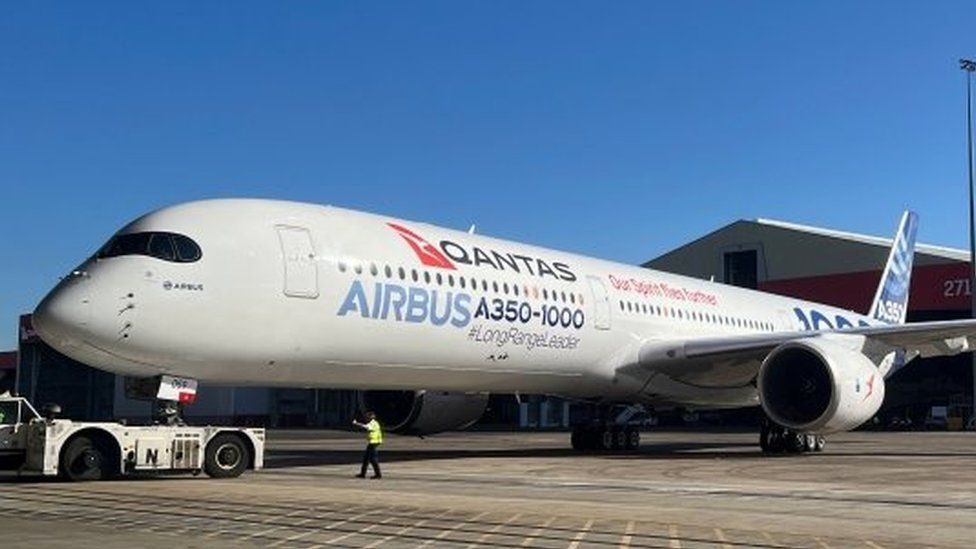

Qantas promises direct flights from Sydney to London and New York
By Tiffanie Turnbull
BBC News, Sydney
13 minutes ago

Qantas has announced it will begin operating non-stop flights from Sydney to London and New York from 2025.
Australia's national carrier said it had purchased a new fleet of Airbus A350-1000 jets capable of direct flights to any city in the world.
The first Sydney-London flights will depart in late 2025 and take about 20 hours, making them the world's longest passenger flights.
The route, launched in 1947, once took 58 hours and seven stops.
"The A350 and 'Project Sunrise' will make any city just one flight away from Australia," chief executive Alan Joyce said in a statement.
"It's the last frontier and the final fix for the tyranny of distance."
Qantas has been working on the project for about five years, but implementation has been delayed by the Covid-19 pandemic.
In 2018 it began offering direct 17-hour direct flights between London and Perth in Western Australia, and in 2019 it conducted a series of test flights from the east coast to the UK and New York.
How UK-Australia travel evolved to one flight
The new fleet of 12 planes will begin arriving in 2025, with the order to be completed by 2028.
The airline did not say how much it would charge for seats in its four classes: first, business, premium economy and economy.
Each plane will be able to carry 238 passengers with 40% of the cabin dedicated to premium seating. Seats will be roomier than usual, Qantas says.
Travellers will also be able to access a "wellbeing zone" in the centre of the plane - with a self-service snack bar and space for stretching and movement - to combat the effects of spending 20 hours in the air.
Currently Qantas operates non-stop flights between UK and Australia, with Boeing 787s linking London's Heathrow Airport and the Northern Territory city of Darwin.
The flight from Australia takes about 17 hours, and the return journey is about 16 hours long.
You may also be interested in: